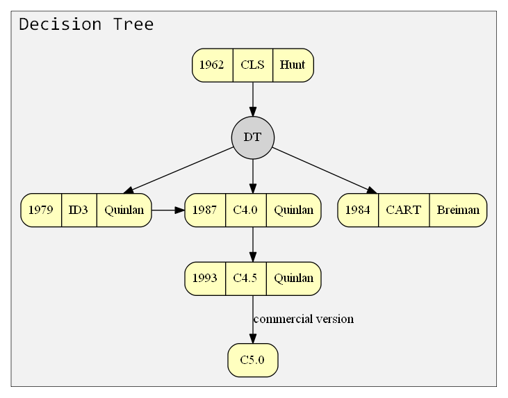

基于树的分类算法综述
Review of Tree-baed classification algorithms April 21, 2018
最初的决策树算法是心理学家兼计算机科学家E.B. Hunt于1962年在研究人类的概念学习过程是提出的概念学习系统(Concept Learning System, CLS)。CLS确立了决策树“分而治之”的学习策略。


1. 决策树
1.1 ID3[1]
ID3是典型的决策树学习算法，由澳大利亚计算机科学家罗斯$\cdot$昆兰(J. Ross Quinlan, 1943-)提出。Quinlan师承Hunt，于1968年获得美国华盛顿大学的计算机博士学位，后回悉尼大学任教。1978年Quinlan到斯坦福大学访问时，开发了类似CLS的程序，最重要的改进是引入了信息增益准则，后来Quinlan把该工作整理成ID3算法于1979年发表。1986年Machine Learning创刊，邀请Quinlan在创刊号上重新发表了ID3算法，掀起了决策树研究的热潮。
1.2 C4.5
1.3 CART
1.4 节点划分
| 编号 | 1 | 2 | 3 | 4 | 5 | 6 | 7 | 8 | 9 | 10 | 11 | 12 | 13 | 14 | 15 | 16 | 17 |
|---|---|---|---|---|---|---|---|---|---|---|---|---|---|---|---|---|---|
| 色泽 | 青绿 | 乌黑 | 乌黑 | 青绿 | 浅白 | 青绿 | 乌黑 | 乌黑 | 乌黑 | 青绿 | 浅白 | 浅白 | 青绿 | 浅白 | 乌黑 | 浅白 | 青绿 |
| 好瓜 | 是 | 是 | 是 | 是 | 是 | 是 | 是 | 是 | 否 | 否 | 否 | 否 | 否 | 否 | 否 | 否 | 否 |
1.4.1 信息增益
\(Ent(D) = -\sum_{k = 1}^{|y|}p_{k}log_2(p_{k})\)
\(Gain(D, a) = Ent(D) - \sum_{v = 1}^{V}\frac{|D^v|}{|D|}Ent(D^v)\)
\(Gain(D, a) = Ent(D) - \sum_{v = 1}^{V}\frac{|D^v|}{|D|}Ent(D^v)\)
1.4.2 增益率
\(Gain\_ratio(D, a) = \frac{Gain(D, a)}{IV(a)}\)
\(IV(a) = -\sum_{v = 1}^{V}\frac{|D^v|}{|D|}log_{2}(\frac{|D^v|}{|D|})\)
\(IV(a) = -\sum_{v = 1}^{V}\frac{|D^v|}{|D|}log_{2}(\frac{|D^v|}{|D|})\)
1.4.3 基尼系数
\(Gini(D) = \sum_{k = 1}^{|y|}\sum_{k^{'}\ne k}p_{k}p_{k^{'}} = 1 - \sum_{k = 1}^{|y|}p_{k}^2\)
\(Gini\_index(D, a) = \sum_{v = 1}^{V}\frac{|D^v|}{|D|}Gini(D^v)\)
\(Gini\_index(D, a) = \sum_{v = 1}^{V}\frac{|D^v|}{|D|}Gini(D^v)\)
1.4.4 连续值节点划分
2 基于树的集成学习
2.1 梯度提升决策树
2.2 随机森林
2.3 梯度提升决策树
2.4 极度随机森林
2.5 XGBoost
\(\hat{y}_i = \sum\limits_{k = 1}^{K}f_k(\mathbf{x}_i), f_k \in \mathcal{F}\)
\(\mathcal{L} = \sum\limits_{i}l(\hat{y}_i, y_i) + \sum\limits_{k}\Omega(f_k), \quad where \quad \Omega(f) = \gamma T + \frac{1}{2}\lambda||w||^2\)
\(\mathcal{L}^{(t)} = \sum\limits_{i = 1}^{n}l(y_i, \hat{y}_{i}^{(t - 1)} + f_{t}(\mathbf{x}_i)) + \Omega(f_t)\)
\(\mathcal{L}^{(t)} \simeq \sum\limits_{i = 1}^{n}[l(y_i, \hat{y}_i^{(t - 1)}) + g_{i}f_{t}(\mathbf{x}_{i}) + \frac{1}{2}h_{i}f_t^2(\mathbf{x}_i)] + \gamma T + \frac{1}{2}\lambda\sum\limits_{j = 1}^{T}w_j^2\)
\(\mathcal{L} = \sum\limits_{i}l(\hat{y}_i, y_i) + \sum\limits_{k}\Omega(f_k), \quad where \quad \Omega(f) = \gamma T + \frac{1}{2}\lambda||w||^2\)
\(\mathcal{L}^{(t)} = \sum\limits_{i = 1}^{n}l(y_i, \hat{y}_{i}^{(t - 1)} + f_{t}(\mathbf{x}_i)) + \Omega(f_t)\)
\(\mathcal{L}^{(t)} \simeq \sum\limits_{i = 1}^{n}[l(y_i, \hat{y}_i^{(t - 1)}) + g_{i}f_{t}(\mathbf{x}_{i}) + \frac{1}{2}h_{i}f_t^2(\mathbf{x}_i)] + \gamma T + \frac{1}{2}\lambda\sum\limits_{j = 1}^{T}w_j^2\)
2.6 LightGBM
参考文献
| [1] | J. R. Quinlan. Induction of decision trees. Machine Learning, 1(1): 81-106, 1986. |
| [2] | J. R. Quinlan. C4.5: programs for machine learning. Morgan Kaufmann, San Meteo, CA, 1993. |
| [3] | L. Breiman, J. Fridman, C. J. Stone and R. A. Olshen. Classification and regression trees. Chapman & Hall/CRC, Boca Raton, FL, 1984. |
| [4] | L. Breiman. Random forests. Machine Learning, 54(1): 5-32, 2001. |
| [5] | P. Geurts, D. Ernst, and L. Wehekel. Extremely randomized trees. Machine Learning, 63(1): 3-42, 2006. |
| [7] | Y. Freund and R. E. Schapire. A Decision-Theoretic Generalization of On-Line Learning and an Application to Boosting. Journal of Computer and System Sciences, 55(1): 119-139, 1997. |
| [8] | J. H. Friedman. Greedy function approximation: A gradient boosting machine. The Annals of Statistics, 29(5): 1189-1232, 2001. |
| [9] | T. Chen and C. Guestrin. XGBoost: A Scalable Tree Boosting System. e-Print: arXiv, 2016. |
| [10] | G. Ke, Q. Meng, T. Finley, T. Wang, W. Chen, W. Ma. Q. Ye, and T.-Y. Liu. LightGBM: A Highly Efficient Gradient Boosting Decision Tree. 31st Conference on Neural Information Processing Systems (NIPS 2017), 146-3154, 2017. |
| [11] | P. Kontschieder, M. Fiterau, A. Criminisi, and S. R. Bulo. Deep Neural Decision Forests. 3Computer Vision (ICCV), 2015 IEEE International Conference on, Santiago, Chile, 7-13 Dec. 2015, 1467-1475, 2015. |
| [12] | 周志华. 机器学习. 清华大学出版社，北京， 清华大学出版社，北京，2016. |
| [13] | Z.-H. Zhou and J. Feng. Deep Forest: Towards An Alternative to Deep Neural Networks. e-Print: arXiv, 2017. |